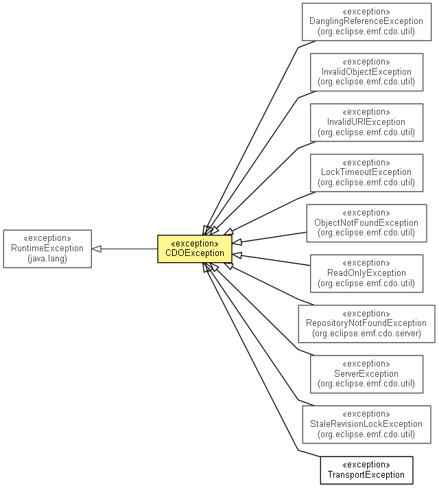

org.eclipse.emf.cdo.common.util
Class CDOException
java.lang.Object
 java.lang.Throwable
java.lang.Exception
java.lang.RuntimeException
org.eclipse.emf.cdo.common.util.CDOException
java.lang.Throwable
java.lang.Exception
java.lang.RuntimeException
org.eclipse.emf.cdo.common.util.CDOException
- All Implemented Interfaces:
- Serializable
- Direct Known Subclasses:
- DanglingReferenceException, InvalidObjectException, InvalidURIException, LockTimeoutException, ObjectNotFoundException, ReadOnlyException, RepositoryNotFoundException, ServerException, StaleRevisionLockException, TransportException
- public class CDOException
- extends RuntimeException

An unchecked exception for general CDO purposes.
- See Also:
- Serialized Form
| Methods inherited from class java.lang.Throwable |
fillInStackTrace, getCause, getLocalizedMessage, getMessage, getStackTrace, initCause, printStackTrace, printStackTrace, printStackTrace, setStackTrace, toString |
CDOException
public CDOException()
CDOException
public CDOException(String message)
CDOException
public CDOException(Throwable cause)
CDOException
public CDOException(String message,
Throwable cause)
Copyright (c) 2011, 2012 Eike Stepper (Berlin, Germany) and others.